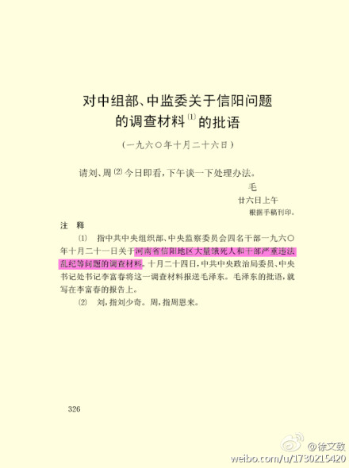
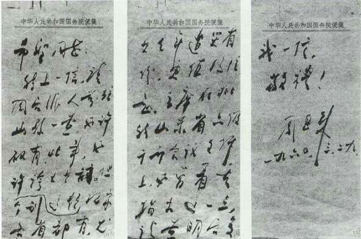
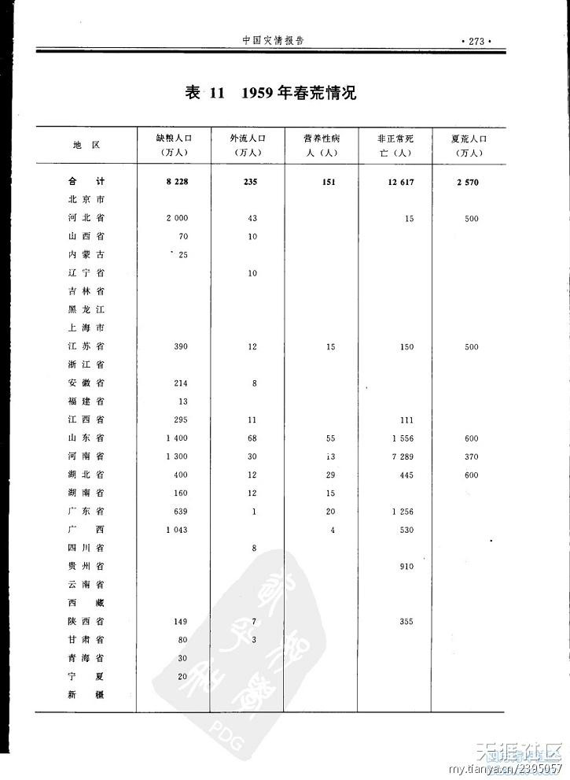
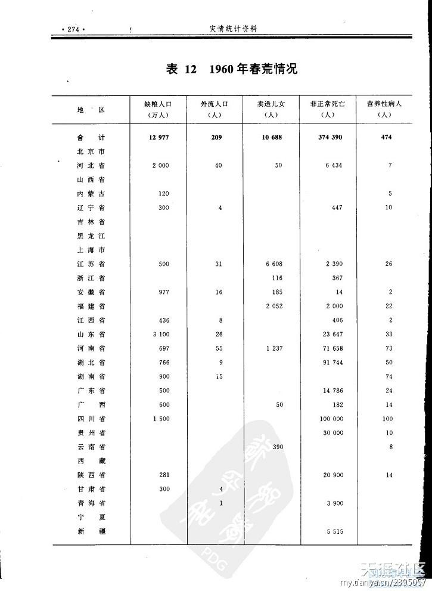
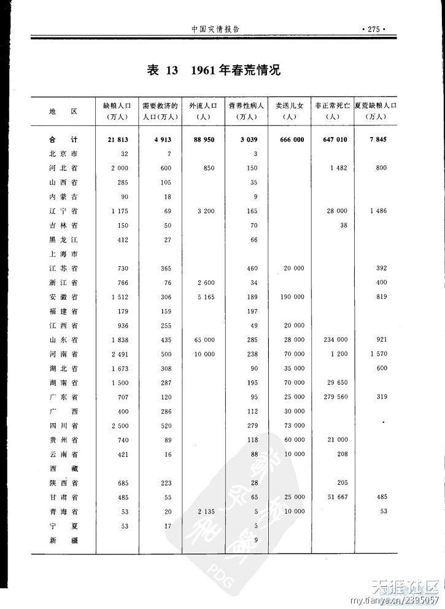
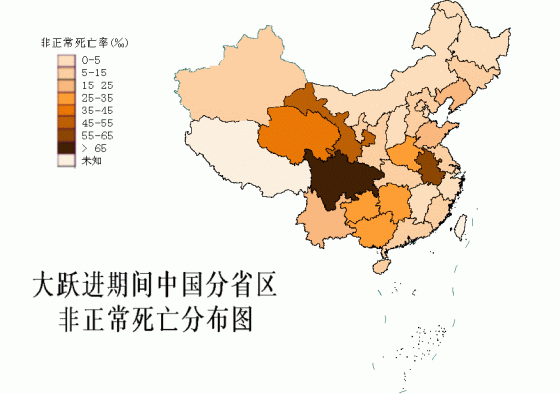
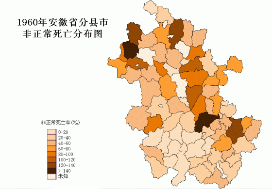

上一个帖子，俺对大饥荒的“非正常死亡人数”进行了简单的扫盲。今天跟大伙儿聊一聊：当时的朝廷官员和如今的民间人士（毛粉）是如何千方百计隐瞒死亡人数的。
提醒一下，没看过本系列前一篇《扫盲一下大饥荒的死亡人数》的网友，建议看完那篇再看本文。
大饥荒期间，各个重灾区的地方官员，往往瞒报、谎报本地的非正常死亡人数。他们这么做主要有如下两个目的。
在大饥荒之前，天朝刚刚搞过大跃进。大跃进那会儿，很多农业大省（比如河南、四川、安徽）都刮起“浮夸风”。啥是“浮夸风”，说白了就是“吹牛皮”——吹嘘自己的粮食产量是亩产万斤。
大伙儿设身处地地想一想：如果你是当年的某个地方官。你掌管的地区前两年刚刚吹过牛，号称粮食亩产万斤，粮食多得吃不完。结果两年不到，就发生大饥荒，你如何向上级领导交代？？在这种情况下，很多官员为了自保，为了推卸责任，肯定会对“非正常死亡人数”肯定会隐瞒不报。
这是地方官员隐瞒死亡人数的最主要原因。
前面提到的，是为了推卸责任而隐瞒。还有另一个原因导致官员隐瞒死亡人数，那就是“吃空额”。
“吃空额”是很常见的腐败手法，历朝历代都有（在军队里，也叫做“吃空饷”）。
老毛统治下的天朝，实行严格的计划经济。大部分生活必需品都是凭票供应（凭票供应一直延续到八十年代，1980年以前出生的网友应该还记得吧）。在那个年代，票据比钱管用。因为很多紧俏的物质花钱是买不到滴，一定要凭票购买。
在凭票供应的年代，如果某个地方官对中央朝廷隐瞒死亡人数，中央依然会按照原先的人口数字继续发放票据。这些多出来的超额票据就落入贪官的腰包。
顺便说一下：老毛统治期间，照样有腐败问题，而且程度还挺严重。很多毛左说毛时代没有腐败——那是骗人滴。
俺看了若干大饥荒的资料后，总结如下几个隐瞒死亡人数的手法。
有些省级官员或地级市官员，根本就不承认有饥荒。由于他们的欺瞒，把中央官员（包括毛太祖）都蒙在鼓里。但是，纸终究保不住火。时间长了之后，总归会有些民间的小道消息流传，并传到朝廷的耳朵里。
俺举个例子：
河南是大饥荒的重灾区，河南省的信阳专区（包括如今的信阳、驻马店及其它几个县），饥荒尤其严重。但是河南省委对此竟然秘而不宣。最后是老毛亲自过问，并派出工作组下去调查，才知道信阳专区死了这么多人（中央调查组报告的数字是105万，信阳地方志统计的死亡人数48.3万）。
以下照片是《毛泽东选集》的截图（连《毛选》都承认大量饿死人，不知道那帮毛粉还有啥好辩解的）

再举个例子：
安徽也是大饥荒的重灾区，但安徽巡抚曾希圣拒不承认本省有饥荒。最后是周恩来写亲笔信给曾希圣，指出安徽存在饥荒，要求他派人调查。
以下是周的亲笔信照片：

有些地方官员故意漏报、少报，以此来降低死亡人数。
《墓碑——六十年代大饥荒纪实》的作者杨继绳，有一次在燕山大讲堂作报告，举了下面两个例子：
当时的各级官员除了隐瞒死亡人数，还极力封锁消息，以免让老百姓知道真相。
在上一个帖子，俺摘录了安徽公安厅向安徽省委写的一份报告《关于发生特殊案件情况的报告》（此报告反映的是人吃人的案件）。省委书记曾希圣拿到该报告后，只批给几个书记传阅，并指示公安厅，严格控制知情范围，有关档案务必销毁。
关于“禁止逃荒要饭”，俺在上一个帖子提到过。禁止逃荒的道理很明显：如果某个地区的饥民大量外逃，自然就会暴露本地区的饥荒情况。所以，很多重灾区的官员都会派民兵把守交通要道，禁止逃荒要饭。
毛粉，顾名思义，就是“毛腊肉的粉丝”。既然是粉丝，当然要处处维护呕像的光辉。而“三年大饥荒”是毛太祖平生的一大污点（当然啦，毛腊肉的污点远不止这一个）。所以，如今的毛粉会采用各种手段，极力否认大饥荒的存在；万一无法否认大饥荒，它们就转而纠缠死亡人数。对它们而言，死亡人数越少，老毛的污点也越小。
这两天，俺特地去逛了几个毛左网站，欣赏了一下毛粉们对大饥荒的辩护伎俩。以下是毛粉们常见的几种辩护伎俩以及俺的点评。
俺的点评：
当时确实有一定程度的出生率下降。但是这部分少生的人口，在数量上无法反映总人口的下降。另外，根据官方提供的材料（参见“中国人口信息网”给出的图表），那3年的死亡率明显上升。这又如何解释捏？
有些毛粉说，因为重灾区省份有大量的饥民逃荒到外省，导致该省份的人口下降。所以用人口变化来计算死亡人数，会夸大。
俺的点评：
大部分逃荒的饥民，不论怎么逃，都还在天朝（逃到境外的，比例很低，可忽略不计）。所以，这个理由只能解释某个省份的人口下降，无法解释全国总人口的下降。
《1949~1995 中国灾情报告》这本书，深得毛粉的青睐。因为此书统计出来的3年大饥荒死亡人数，只有100多万。所以毛粉们就拿此书来说事儿。
俺的点评：
这本书有3大硬伤。看完这三个硬伤，你就明白此书根本不可信。
1. 很多省份的资料不全，没有统计数字
比如1959年和1960年，湖南省这一栏是空白。
那么，湖南到底有没有人饿死捏？请看毛太祖的秘书胡乔木所写的《关于公社食堂问题的调查材料》（上一个帖子有此文的摘录和出处）。他调查了湖南湘乡县，发现该县1960年就死亡2万人，很多公社的死亡率竟然到20%！
所以，1959年和1960年，湖南不可能没有死人。只能解释为，缺乏数据，所以空缺。
2. 把数字空缺当作零
非常搞笑的是，很多五毛没有意识到统计数字空缺的问题，把空缺当作没有死亡来处理。这样累加出来的总数，有啥意义捏？
3. 即使有统计数字，也相当离谱
请看1960年安徽死亡人数，居然只有14人！（当时安徽的重灾县，随便找一个公社，都不止14人死亡）
为了证明俺不是空口胡诌，特地找来本书从1959-1961这3个年份的统计表截图，给大伙儿瞧一瞧。



作为官方出版物，《中国灾情报告》的死亡数字为何如此之低？俺不妨猜测一下，书中列出的死亡人数，属于“直接死亡”。
在前面的帖子，俺已经特地强调过了，直接死亡（活活饿死）仅占非正常死亡总数的很小比例。另外，每个地区的直接死亡人数，很难查证——（俺前面刚解释过）因为地方官员有意隐瞒死亡人数。
俺的点评：
1. 灾情的差异
首先，全国各省的灾情，差异很大。如图可见，重灾区集中在少数几个省（这是符合二八原理滴）。

其次，即使是重灾区的省份，不同的县，情况也很不一样（请看图）。

所以，如果你咨询的当事人，不是位于重灾区，未必能看到饿莩遍野的情形。
2. 记忆的差异
什么是记忆的差异捏？如果你所在的农村有大量青壮年饿死，往往会给你留下深刻的印象；反之，如果死亡的人大部分是老年人，往往不会留下深刻印象。
请看一个数据。大饥荒前后几年，天朝的平均死亡率在1.1%左右。按那段时间天朝的平均人口（约6.5亿），每年正常死亡人口大约在700万。
咱们作个假设：大饥荒那3年的非正常死亡正好是3000万，再假设每年非正常死亡正好是1000万。也就是说：没有大饥荒，每年大约死亡700万，有了大饥荒，每年变为1700万。大约是正常情况的2.5倍。
如果你生活的某个农村，平常年景，村里每年会死亡10个老人。到了1959年-1961年，每年死亡25个老人。那么，在50多年后，难道你还会留下深刻印象？再说了，普通的村民哪有闲工夫没事去统计本村的死亡人数捏？
俺的点评：
这个问题好回答。主要原因如下：
1. 民众逆来顺受的性格
对于大部分天朝的民众，其性格都是逆来顺受的。
在一年多前，俺曾经写过一篇博文“书评：《中国人的性格》”。此书写于清朝年间，对中国的文化有深刻的剖析。其中的第17章“能忍且韧”专门介绍了清朝民众软弱的性格。一百多年过去了，底层民众软弱的性格似乎没有大变化。
2. 真理部的洗脑
大饥荒的时候，伟光正已经篡权10年左右，天朝民众已经被真理部洗脑了10年。而且农村地区的民众比知识分子更容易被洗脑。
3. 政府的封锁消息
关于政府封锁消息，本文前面已经介绍过了。在消息不通畅的情况下，很多饥民以为饥荒只在本地发生。
4. 政府的高压统治
老毛统治下的天朝，是一个典型的独裁极权国家。这种国家的一大特色就是：依靠国家机器进行高压统治。当时的天朝，每个县都有人武部，每个乡镇都有民兵组织，每个村都有党支部。在这种高压统治下，即使有零星的反抗，也早就被镇压下去了。
俺的点评：
前面说了，大饥荒的严重程度是很不平均的。死亡人数集中在少数灾情严重的省份。在灾情不严重的省份，大饥荒对社会生产的影响不会太大。
另外，在前面帖子的扫盲中，俺提到了活活饿死的比例不高。大多数人是因为营养不良导致间接死亡。这部分死亡人口以老人和儿童居多。而老人和儿童对社会生产的影响，不如青壮年的影响大。
俺的点评：
说出这种言论的毛粉，堪称现代版的“何不食肉糜”（这可是晋惠帝的千古名句啊）
首先给这类脑残普及一下人类学的的知识。在单位时间、单位土地面积上，“种植业”的效率是最高滴（没有之一），能够养活最多的人口。采摘野果属于“采集业”，抓捕野生动物属于“狩猎业”。这两种的效率都【远低于】种植业。所以，在原始社会，人类一旦发展出种植业，采集业和狩猎业就退居次要地位。
由于大饥荒持续的时间较长（3年），而且重灾区（四川、河南、安徽）的人口密度较高。在这种情况下，无论是采集业还是狩猎业都无法养活当时的人口。
顺便说一下，看过《枪炮、病菌与钢铁——人类社会的命运》一书的网友，应该对种植业的重要意义深有体会。
本系列后续的帖子，俺会分析一下，党国是如何把大饥荒的责任转嫁给老天爷和俄国佬。
回到本系列的目录
提醒一下，没看过本系列前一篇《扫盲一下大饥荒的死亡人数》的网友，建议看完那篇再看本文。
★朝廷官员为啥要隐瞒？
大饥荒期间，各个重灾区的地方官员，往往瞒报、谎报本地的非正常死亡人数。他们这么做主要有如下两个目的。
◇为了推卸责任，保住官位
在大饥荒之前，天朝刚刚搞过大跃进。大跃进那会儿，很多农业大省（比如河南、四川、安徽）都刮起“浮夸风”。啥是“浮夸风”，说白了就是“吹牛皮”——吹嘘自己的粮食产量是亩产万斤。
大伙儿设身处地地想一想：如果你是当年的某个地方官。你掌管的地区前两年刚刚吹过牛，号称粮食亩产万斤，粮食多得吃不完。结果两年不到，就发生大饥荒，你如何向上级领导交代？？在这种情况下，很多官员为了自保，为了推卸责任，肯定会对“非正常死亡人数”肯定会隐瞒不报。
这是地方官员隐瞒死亡人数的最主要原因。
◇为了吃空额
前面提到的，是为了推卸责任而隐瞒。还有另一个原因导致官员隐瞒死亡人数，那就是“吃空额”。
“吃空额”是很常见的腐败手法，历朝历代都有（在军队里，也叫做“吃空饷”）。
老毛统治下的天朝，实行严格的计划经济。大部分生活必需品都是凭票供应（凭票供应一直延续到八十年代，1980年以前出生的网友应该还记得吧）。在那个年代，票据比钱管用。因为很多紧俏的物质花钱是买不到滴，一定要凭票购买。
在凭票供应的年代，如果某个地方官对中央朝廷隐瞒死亡人数，中央依然会按照原先的人口数字继续发放票据。这些多出来的超额票据就落入贪官的腰包。
顺便说一下：老毛统治期间，照样有腐败问题，而且程度还挺严重。很多毛左说毛时代没有腐败——那是骗人滴。
★朝廷官员如何隐瞒？
俺看了若干大饥荒的资料后，总结如下几个隐瞒死亡人数的手法。
◇彻底隐瞒，根本不报
有些省级官员或地级市官员，根本就不承认有饥荒。由于他们的欺瞒，把中央官员（包括毛太祖）都蒙在鼓里。但是，纸终究保不住火。时间长了之后，总归会有些民间的小道消息流传，并传到朝廷的耳朵里。
俺举个例子：
河南是大饥荒的重灾区，河南省的信阳专区（包括如今的信阳、驻马店及其它几个县），饥荒尤其严重。但是河南省委对此竟然秘而不宣。最后是老毛亲自过问，并派出工作组下去调查，才知道信阳专区死了这么多人（中央调查组报告的数字是105万，信阳地方志统计的死亡人数48.3万）。
以下照片是《毛泽东选集》的截图（连《毛选》都承认大量饿死人，不知道那帮毛粉还有啥好辩解的）
再举个例子：
安徽也是大饥荒的重灾区，但安徽巡抚曾希圣拒不承认本省有饥荒。最后是周恩来写亲笔信给曾希圣，指出安徽存在饥荒，要求他派人调查。
以下是周的亲笔信照片：
◇漏报、少报
有些地方官员故意漏报、少报，以此来降低死亡人数。
《墓碑——六十年代大饥荒纪实》的作者杨继绳，有一次在燕山大讲堂作报告，举了下面两个例子：
河南信阳潢川县伞陂寺公社党委得知省委工作组即将到来的通知以后，立即召开大队电话会议，说公社党委向县委报的死亡人数是500多人，然后分到各个队，各队去报，不能多，也不能少。当时发了一个紧急通知：各生产队长、会计：公社分配我们大队死亡人数34人，大队商量，按食堂分配下去，数字不能多，不能少。一队4人，二队5人等这么通知下来。伞陂公社第一次向上报的死亡人数523人，第二次报的是3889人（后又改为2907人），最后省委工作组调查结果是6668人。
河南唐邑县统计死亡数字时，上级规定“七不算，一不登”：
本地人死在外地的不算
外地人死在本地的不算
很小的小孩不算
不在统计时期死的不算
外逃下落不明的不算
重名的不算
可登可不登的一律不登
◇严密封锁消息
当时的各级官员除了隐瞒死亡人数，还极力封锁消息，以免让老百姓知道真相。
在上一个帖子，俺摘录了安徽公安厅向安徽省委写的一份报告《关于发生特殊案件情况的报告》（此报告反映的是人吃人的案件）。省委书记曾希圣拿到该报告后，只批给几个书记传阅，并指示公安厅，严格控制知情范围，有关档案务必销毁。
◇禁止逃荒要饭
关于“禁止逃荒要饭”，俺在上一个帖子提到过。禁止逃荒的道理很明显：如果某个地区的饥民大量外逃，自然就会暴露本地区的饥荒情况。所以，很多重灾区的官员都会派民兵把守交通要道，禁止逃荒要饭。
★毛粉为啥要替大饥荒辩护？
毛粉，顾名思义，就是“毛腊肉的粉丝”。既然是粉丝，当然要处处维护呕像的光辉。而“三年大饥荒”是毛太祖平生的一大污点（当然啦，毛腊肉的污点远不止这一个）。所以，如今的毛粉会采用各种手段，极力否认大饥荒的存在；万一无法否认大饥荒，它们就转而纠缠死亡人数。对它们而言，死亡人数越少，老毛的污点也越小。
★毛粉是如何替大饥荒辩护？
这两天，俺特地去逛了几个毛左网站，欣赏了一下毛粉们对大饥荒的辩护伎俩。以下是毛粉们常见的几种辩护伎俩以及俺的点评。
◇毛粉辩护：是因为出生率下降导致虚假死亡人数
俺的点评：
当时确实有一定程度的出生率下降。但是这部分少生的人口，在数量上无法反映总人口的下降。另外，根据官方提供的材料（参见“中国人口信息网”给出的图表），那3年的死亡率明显上升。这又如何解释捏？
◇毛粉辩护：是因为大量逃荒导致虚假死亡人数
有些毛粉说，因为重灾区省份有大量的饥民逃荒到外省，导致该省份的人口下降。所以用人口变化来计算死亡人数，会夸大。
俺的点评：
大部分逃荒的饥民，不论怎么逃，都还在天朝（逃到境外的，比例很低，可忽略不计）。所以，这个理由只能解释某个省份的人口下降，无法解释全国总人口的下降。
◇毛粉辩护：《1949~1995 中国灾情报告》中的死亡人数只有104万
《1949~1995 中国灾情报告》这本书，深得毛粉的青睐。因为此书统计出来的3年大饥荒死亡人数，只有100多万。所以毛粉们就拿此书来说事儿。
俺的点评：
这本书有3大硬伤。看完这三个硬伤，你就明白此书根本不可信。
1. 很多省份的资料不全，没有统计数字
比如1959年和1960年，湖南省这一栏是空白。
那么，湖南到底有没有人饿死捏？请看毛太祖的秘书胡乔木所写的《关于公社食堂问题的调查材料》（上一个帖子有此文的摘录和出处）。他调查了湖南湘乡县，发现该县1960年就死亡2万人，很多公社的死亡率竟然到20%！
所以，1959年和1960年，湖南不可能没有死人。只能解释为，缺乏数据，所以空缺。
2. 把数字空缺当作零
非常搞笑的是，很多五毛没有意识到统计数字空缺的问题，把空缺当作没有死亡来处理。这样累加出来的总数，有啥意义捏？
3. 即使有统计数字，也相当离谱
请看1960年安徽死亡人数，居然只有14人！（当时安徽的重灾县，随便找一个公社，都不止14人死亡）
为了证明俺不是空口胡诌，特地找来本书从1959-1961这3个年份的统计表截图，给大伙儿瞧一瞧。
作为官方出版物，《中国灾情报告》的死亡数字为何如此之低？俺不妨猜测一下，书中列出的死亡人数，属于“直接死亡”。
在前面的帖子，俺已经特地强调过了，直接死亡（活活饿死）仅占非正常死亡总数的很小比例。另外，每个地区的直接死亡人数，很难查证——（俺前面刚解释过）因为地方官员有意隐瞒死亡人数。
◇毛粉辩护：如果真死这么多人，为啥很多当事人没有印象？
俺的点评：
1. 灾情的差异
首先，全国各省的灾情，差异很大。如图可见，重灾区集中在少数几个省（这是符合二八原理滴）。
其次，即使是重灾区的省份，不同的县，情况也很不一样（请看图）。
所以，如果你咨询的当事人，不是位于重灾区，未必能看到饿莩遍野的情形。
2. 记忆的差异
什么是记忆的差异捏？如果你所在的农村有大量青壮年饿死，往往会给你留下深刻的印象；反之，如果死亡的人大部分是老年人，往往不会留下深刻印象。
请看一个数据。大饥荒前后几年，天朝的平均死亡率在1.1%左右。按那段时间天朝的平均人口（约6.5亿），每年正常死亡人口大约在700万。
咱们作个假设：大饥荒那3年的非正常死亡正好是3000万，再假设每年非正常死亡正好是1000万。也就是说：没有大饥荒，每年大约死亡700万，有了大饥荒，每年变为1700万。大约是正常情况的2.5倍。
如果你生活的某个农村，平常年景，村里每年会死亡10个老人。到了1959年-1961年，每年死亡25个老人。那么，在50多年后，难道你还会留下深刻印象？再说了，普通的村民哪有闲工夫没事去统计本村的死亡人数捏？
◇毛粉辩护：如果死这么多人，为啥没有发生暴动/起义？
俺的点评：
这个问题好回答。主要原因如下：
1. 民众逆来顺受的性格
对于大部分天朝的民众，其性格都是逆来顺受的。
在一年多前，俺曾经写过一篇博文“书评：《中国人的性格》”。此书写于清朝年间，对中国的文化有深刻的剖析。其中的第17章“能忍且韧”专门介绍了清朝民众软弱的性格。一百多年过去了，底层民众软弱的性格似乎没有大变化。
2. 真理部的洗脑
大饥荒的时候，伟光正已经篡权10年左右，天朝民众已经被真理部洗脑了10年。而且农村地区的民众比知识分子更容易被洗脑。
3. 政府的封锁消息
关于政府封锁消息，本文前面已经介绍过了。在消息不通畅的情况下，很多饥民以为饥荒只在本地发生。
4. 政府的高压统治
老毛统治下的天朝，是一个典型的独裁极权国家。这种国家的一大特色就是：依靠国家机器进行高压统治。当时的天朝，每个县都有人武部，每个乡镇都有民兵组织，每个村都有党支部。在这种高压统治下，即使有零星的反抗，也早就被镇压下去了。
◇毛粉辩护：如果死这么多人，为啥社会的生产基础没有崩溃？
俺的点评：
前面说了，大饥荒的严重程度是很不平均的。死亡人数集中在少数灾情严重的省份。在灾情不严重的省份，大饥荒对社会生产的影响不会太大。
另外，在前面帖子的扫盲中，俺提到了活活饿死的比例不高。大多数人是因为营养不良导致间接死亡。这部分死亡人口以老人和儿童居多。而老人和儿童对社会生产的影响，不如青壮年的影响大。
◇毛粉辩护：如果没粮食吃，难道饥民不会去吃野果？不会去抓野生动物？
俺的点评：
说出这种言论的毛粉，堪称现代版的“何不食肉糜”（这可是晋惠帝的千古名句啊）
首先给这类脑残普及一下人类学的的知识。在单位时间、单位土地面积上，“种植业”的效率是最高滴（没有之一），能够养活最多的人口。采摘野果属于“采集业”，抓捕野生动物属于“狩猎业”。这两种的效率都【远低于】种植业。所以，在原始社会，人类一旦发展出种植业，采集业和狩猎业就退居次要地位。
由于大饥荒持续的时间较长（3年），而且重灾区（四川、河南、安徽）的人口密度较高。在这种情况下，无论是采集业还是狩猎业都无法养活当时的人口。
顺便说一下，看过《枪炮、病菌与钢铁——人类社会的命运》一书的网友，应该对种植业的重要意义深有体会。
★结尾
今天虽然揭露了毛粉的忽悠，但是毛粉的伎俩是层出不穷滴。今后大伙儿如果看到毛粉新的忽悠伎俩，不妨来信跟俺分享。本系列后续的帖子，俺会分析一下，党国是如何把大饥荒的责任转嫁给老天爷和俄国佬。
回到本系列的目录
版权声明
本博客所有的原创文章，作者皆保留版权。转载必须包含本声明，保持本文完整，并以超链接形式注明作者编程随想和本文原始地址：
https://program-think.blogspot.com/2012/05/three-years-famine-2.html
本博客所有的原创文章，作者皆保留版权。转载必须包含本声明，保持本文完整，并以超链接形式注明作者编程随想和本文原始地址：
https://program-think.blogspot.com/2012/05/three-years-famine-2.html